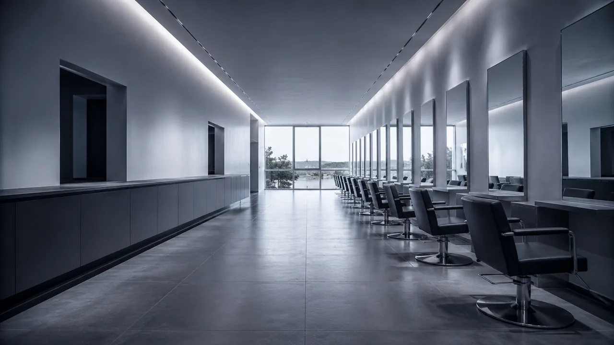
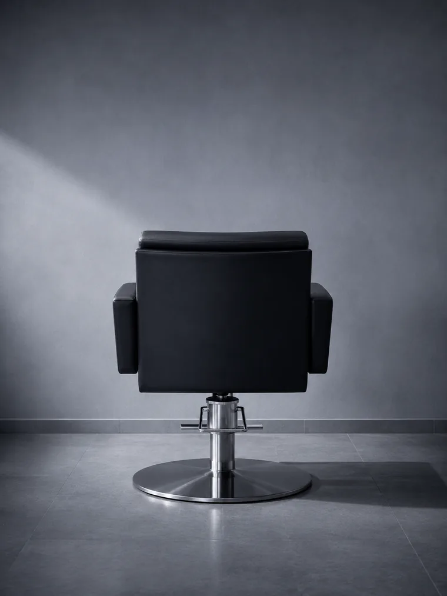
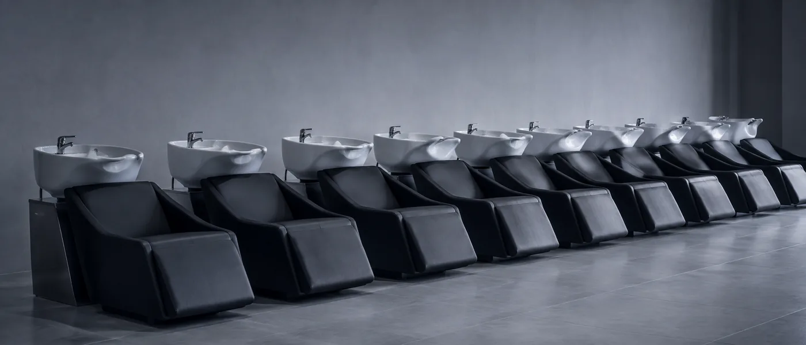
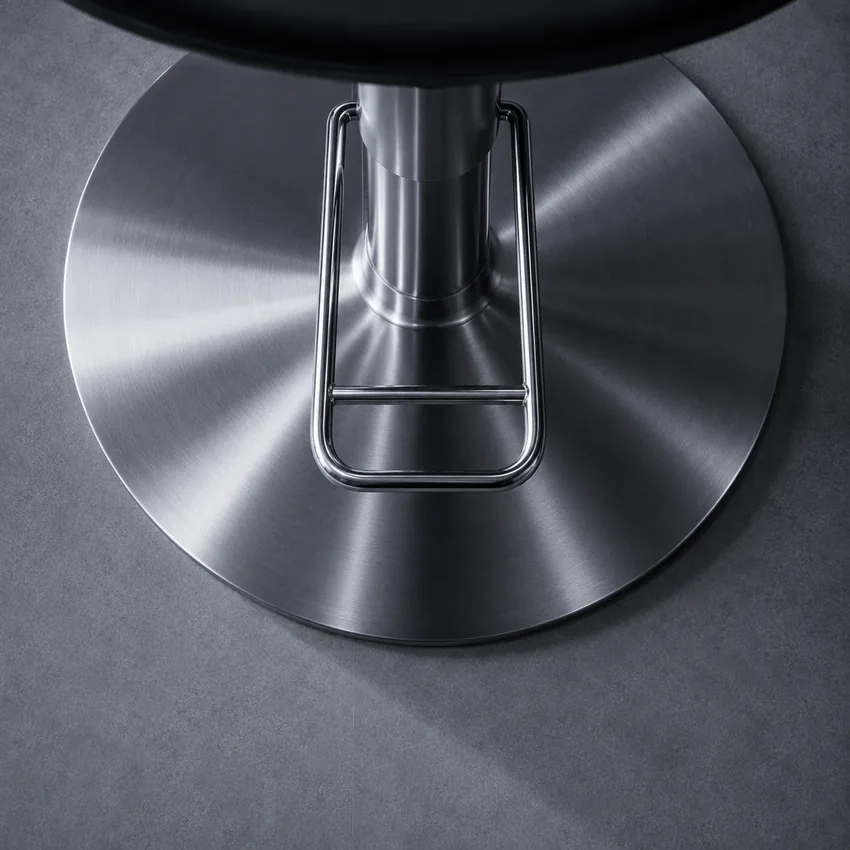

Galerie de réalisations
Photos haute qualité de coupes, colorations et coiffures, optimisées WebP. Le visiteur voit le talent du salon avant même d'entrer — et réserve avec confiance. La galerie est pensée pour donner envie, pas juste illustrer.

Comment un site sur mesure attire une clientèle locale, valorise le talent du salon et remplit l'agenda — sans budget pub, sans WordPress, sans template générique.
Élise & Ciseaux est un salon fictif. La marque, le lieu et l'histoire racontée ci-dessous sont inventés — ce n'est pas une référence client.
Le site, lui, existe. Il est développé, déployé et accessible en ligne. Les scores présentés plus bas sont mesurés sur ce site réel, et vous pouvez les vérifier vous-même à tout moment via le lien PageSpeed.
Un client cherche un coiffeur le samedi matin. Il réserve chez le premier salon qu'il trouve sur Google — pas forcément le meilleur.
Pour ce projet à Cogolin, l'objectif était clair : un site élégant, rapide sur mobile, avec une galerie de réalisations qui donne envie et un accès direct à la réservation. Tout ce qu'un salon mérite — sans WordPress lent et sans template générique qui ressemble à celui de 200 autres salons dans le Var.
Le salon Élise & Ciseaux à Cogolin avait un problème commun à la majorité des coiffeurs du Var : invisible sur Google, pas de galerie en ligne, et un bouton "réserver" absent sur mobile. Des clients passaient devant le salon sans jamais trouver leur site. La solution était évidente — mais elle devait être bien exécutée.


Photos haute qualité de coupes, colorations et coiffures, optimisées WebP. Le visiteur voit le talent du salon avant même d'entrer — et réserve avec confiance. La galerie est pensée pour donner envie, pas juste illustrer.
Visible immédiatement sur mobile sans scroller. Un clic vers l'agenda en ligne ou le numéro de téléphone — zéro friction entre l'intention et la réservation. Sur mobile, chaque seconde de friction coûte un client.
H1 géolocalisé "coiffeur Cogolin", Schema.org LocalBusiness avec coordonnées précises, Google Business Profile optimisé et lié au site. Le salon est structuré pour ressortir sur "coiffeur Cogolin", "salon coiffure Var", "coiffeur femme Golfe de Saint-Tropez".
Les avis Google affichés directement sur le site rassurent les nouveaux clients avant qu'ils appellent. Un salon dont les avis sont visibles convertit mieux qu'un salon sans preuve sociale à l'écran.
Votre talent se voit dans le miroir.
Pas sur Google.
Mobile
Solide sur mobile malgré la galerie haute qualité.
Contrastes WCAG, structure sémantique, navigation clavier fluide.
HTTPS, images dimensionnées, zéro dépendance vulnérable.
H1 géolocalisé, Schema.org LocalBusiness, sitemap structuré.
Desktop
Première impression irréprochable, avant même de voir les réalisations.
Même niveau que sur mobile. Tous les critères essentiels respectés.
Sécurité, protocoles, images optimisées — aucune anomalie côté bureau.
Structure sémantique complète. Google comprend et indexe chaque page du site.
Scores relevés sur le site déployé. Lighthouse évolue : ces valeurs peuvent varier d'une mesure à l'autre — le lien PageSpeed plus bas permet de les recalculer en direct.
Desktop 100/100, SEO 100/100, Bonnes pratiques 100/100. Galerie de réalisations optimisée, fonts hébergées localement, images WebP pré-dimensionnées, zéro plugin inutile — sur un site de salon, ce niveau de finition technique reste rare.
Le 89 en performance mobile reflète simplement la richesse visuelle du site. C'est le juste équilibre entre beauté et vitesse : une galerie de coiffure sans photos ne sert à rien.
Ouvrez le site sur mobile. Regardez la galerie, le bouton de réservation. Comparez avec les autres salons que vous trouvez sur Google. La différence est immédiate.
Site de démonstration — déployé sur GitHub Pages

Découvrez notre expertise complète pour les salons de coiffure et instituts de beauté dans le Var 83.
→ Page coiffeur VarBasé près de Cogolin, je connais le marché local et accompagne les professionnels de la capitale artisanale du Golfe.
→ Page CogolinVotre site de salon existe déjà mais est lent ou vieilli ? Je le refonds entièrement — nouveau design, nouvelles performances.
→ Voir la refonteAprès le lancement, je maintiens votre site rapide et sécurisé. À partir de 60 €/mois, sans engagement.
→ Voir la maintenanceDécouvrez les autres sites que j'ai créés pour les professionnels du Var — restaurants, agences immo, artisans.
→ Voir le portfolioDevis gratuit sous 24h. Décrivez votre salon en quelques lignes — je vous propose une solution adaptée.
→ Demander mon devisLes chiffres ne remplissent pas un agenda.
Ils amènent ceux qui le
remplissent.
Découvrez l'offre complète sur la création de site pour coiffeur ou demandez directement votre devis gratuit.
Devis 100% gratuit · Sans engagement · Réponse sous 24h · Var 83
Étude de cas site internet coiffeur Var · Performance web salon coiffure Cogolin · SEO coiffeur Var 83 · Création site coiffeur Golfe de Saint-Tropez